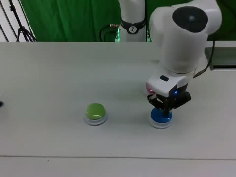
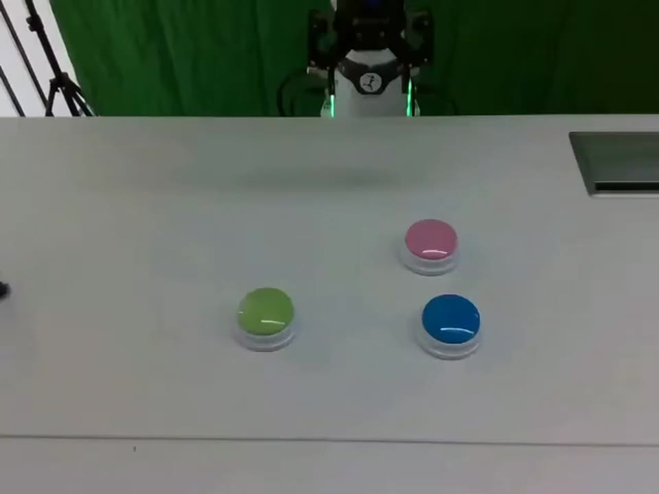

Every failure, at the moment it happens.
Play a generated clip. RoboGaze’s findings appear as the video reaches each failure, with its type, time span, dimension and severity. Open a finding to see the frames behind it.
Ground the task, route to specialists, verify.
One frozen VLM plays every role, with no task-specific training. It grounds the instruction and the scene, sends each subtask only to the failure specialists that matter, and lets a critic accept, merge or reject every candidate before it enters the report.

RoboGazeBench: 914 generated videos with time-stamped failures.
Generated manipulation videos from five generators and three robot embodiments. Annotators label each visible failure with its type, time span, severity and a description. 210 clips contain no failure, so an evaluator must also know when to stay silent.
Three embodiments
What the clips cover
Clip counts by task family, generator, length and embodiment. Each clip is a generated example from its task family.
Generators
* held out from all development
Clip length
median 10.4 s, longest 148.9 s
Embodiment
Six dimensions, thirty failure types
Each dimension asks one question. In these benchmark clips the frame lights up while the annotated failure is happening.
Task semantics
Task Progress412 events
Did the task reach the required state?
Types: Task incompletion, failed grasp, failed placement, premature termination, ambiguous task success.
Instruction Consistency198 events
Did it follow the instruction and its constraints?
Types: Wrong effector, wrong object, wrong target location, wrong action order, ignored constraint.
Entity consistency
Object–Scene Consistency341 events
Do the objects stay coherent?
Types: Object hallucination, object disappearance, object identity swap, object distortion, object appearance drift.
Robot-Body Consistency286 events
Does the robot keep its visible structure?
Types: Hallucinated robot part, missing robot part, duplicated arm or gripper, robot body deformation, left/right identity confusion.
Physics & observability
Physical Plausibility379 events
Is the visible interaction physically possible?
Types: Object teleportation, object floating, object penetration, grasp without visible support, other implausible dynamics.
Visual Quality231 events
Are the frames clear enough to judge?
Types: Frame corruption, camera instability, blur, occlusion, low visibility.
Better diagnoses on every backbone.
All methods use the same frozen VLM and the same video input. GLiDE+ is the strongest control: a published event detector given RoboGaze's schema and severity rubric.
RoboGaze describes failures better than every baseline, on all eight VLMs.
Event description F1 on all 914 clips. The gain over GLiDE+ stays between 10.1 and 12.3 points, from an 8B open model to Gemini 3.1 Pro.
It stays silent when nothing failed.
Correct empty reports on the 210 failure-free clips, mean of 8 backbones.
The margin grows on harder clips.
F1 gain over GLiDE+ by clip length. On the held-out generators it is +12.4 (Wan 2.2) and +13.0 (Veo).
Blind human raters confirm it.
Human re-scoring of the gold subset, and precision when the reports are used to select generated demonstrations.
Event F1 re-scored by humans
Precision of selected demonstrations
An empty report means no failure is visible in the sampled frames. It does not show that the behavior is executable on a robot.
Benchmark clips are single-view; consistency across cameras is not evaluated.
The paper compares RoboGaze with controls given an equal or larger inference budget.
Three ways to use RoboGaze.
Diagnose your own generated videos, benchmark another evaluator on RoboGazeBench, or extend the framework with a new backbone, failure type or data. None of them requires training.

Diagnose your videos
1Inputs


“Press the pink, then the blue, then the green button.”
A generated video, its first frame and the task instruction.
2Run RoboGaze on a frozen VLM
One frozen VLM plays every role. No fine-tuning.
3Read the report
One report per clip. A clean clip gets an empty list.
Benchmark your evaluator
1Load the data
914 clips, 1,847 failures, 210 clean clips.
2Run yours
Export one event list per clip: dimension, type, start and end time, severity, description.
3Match events
Events are matched to the human reference by time overlap and description.
4Compare
Description F1, temporal IoU and clean-clip accuracy, next to CoT (23.5), GLiDE+ (46.0) and RoboGaze (57.3).
Extend the framework
New backbone
Wrap any VLM behind one call: frames and a prompt in, text out.
New failure type
Add its definition and a specialist prompt. Scoring needs new annotations.
New data
Add clips from a new generator or robot with reference annotations, then score them as in B.